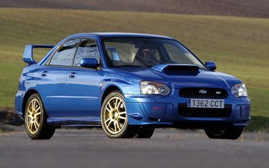

Erik Alonso Hernandez
Subaru.
Subaru Impreza WRX Sti (2002-2005).
El Subaru Impreza WRX Sti cuenta con un motor delantro longitudinal cuatro cilindros plano sobrealimentado que desarolla un par máximo de 343 Nm desde 4000 rpm y una potencia máxima de 265 CV a 6000 rpm transmitida a las cuatro ruedas de 17 pulgadas a través una transmisión manual de 6 velocidades.
Precio de mercado: 20.000€